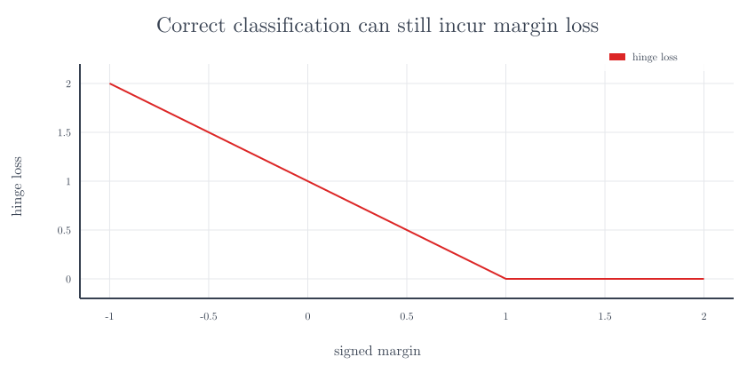
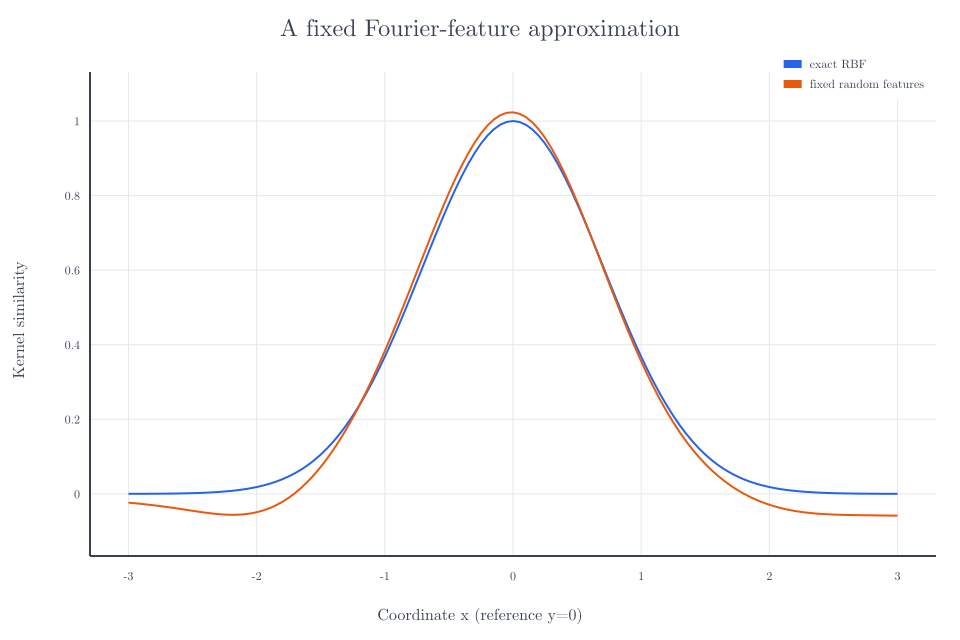

Support Vector Machines: Hinge Loss and Random Features
Abstract
A classifier can seek a decision boundary with a margin rather than fit class probabilities. We inspect hinge-loss regions, fit a tiny linear margin model and check the Gaussian-kernel approximation supplied by random Fourier features. The finite-feature primal model is distinct from an exact kernel dual, and neither its margins nor its votes are probabilities.
The method
For labels y in {-1,1} and score f=xᵀw+b, the regularised primal objective is
The bias is unpenalised. Misclassification (margin <=0) differs from margin violation (margin<1). At the hinge kink a valid subgradient is used. For nonlinear decisions, concatenate cosine and sine features with Gaussian frequencies B and divide by sqrt(m). With B_ij distributed N(0,gamma/(2 pi²)), their expected inner product is exp(-gamma||x-x'||²). This follows from the characteristic function of a Gaussian. A finite draw approximates the kernel and may deviate; training a linear margin model on it solves a finite-feature problem. Feature evaluation costs O(NDm), and primal steps O(Nm).
The concept diagram below is drawn by dm::graphics::Diagram. Its editable C++
source is the complete block below; regeneration uses the same datamunge toolchain
as the numerical examples. Exports consume the saved local SVG.
#include <dm/dm.hpp>
int main() {
std::filesystem::create_directories("build");
dm::graphics::Diagram diagram;
diagram.node("n0", {0.0, 0}, "Signed margin\nyf(x)");
diagram.node("n1", {5.2, 0}, "Hinge penalty\nmax(0,1-yf)");
diagram.node("n2", {10.4, 0}, "Weight regularisation\nlinear or Fourier features");
diagram.edge("n0", "n1").edge("n1", "n2");
diagram.save_svg("build/support_vector_machines_concept.svg");
}Simple examples
Margins -1,0,.5,1,2 have hinge losses 2,1,.5,0,0. This exposes correctly classified points that still violate the unit margin.
#include <dm/dm.hpp>
int main() {
namespace n = dm::nn;
const auto margin = n::tensor({-1, 0, .5, 1, 2}), loss = n::relu(1 - margin);
auto p = dm::graphics::RPlot::create();
p.lines(margin.to_vector<double>(), loss.to_vector<double>(), "hinge loss")
.title("Correct classification can still incur margin loss")
.x_label("signed margin")
.y_label("hinge loss");
std::filesystem::create_directories("build");
p.size(850, 420).save_svg("build/support_vector_machines_hinge.svg");
dm::dstruct::DataFrame t;
t.add_column("margin", margin.to_vector<double>());
t.add_column("hinge", loss.to_vector<double>());
std::print("{}\n", t.to_md());
}| margin | hinge |
|---|---|
| -1.0 | 2.0 |
| 0.0 | 1.0 |
| 0.5 | 0.5 |
| 1.0 | 0.0 |
| 2.0 | 0.0 |

Checking the theory
#include <dm/dm.hpp>
int main() {
namespace n = dm::nn;
const auto x = n::tensor({-2, -1, 1, 2}, {4, 1}, n::DType::Float64),
y = n::tensor({-1, -1, 1, 1}, {4, 1}, n::DType::Float64);
auto w = n::zeros({1, 1}, n::DType::Float64).requires_grad_(),
b = n::scalar(0, n::DType::Float64).requires_grad_();
n::OptimizerConfig c;
c.kind = n::OptimizerKind::Adam;
n::Optimizer opt({w, b}, .02, c);
for (int i = 0; i < 400; ++i)
opt.minimize(n::mean(n::relu(1 - y * (n::matmul(x, w) + b))) + .05 * n::sum(n::square(w)));
const auto margin = y * (n::matmul(x, w) + b);
if (n::min(margin).item() <= 0)
return 1;
n::Generator rng(19);
const auto q = n::tensor({0, 0, .5, 0, 1, 0}, {3, 2}, n::DType::Float64);
const auto B =
n::normal({2, 2048}, 0, std::sqrt(1 / (2 * std::numbers::pi * std::numbers::pi)), rng,
n::DType::Float64);
const auto phi = n::gaussian_fourier_features(q, B) / std::sqrt(2048.);
std::print("Fitted weight {:.6f}, bias {:.6f}, signed margins {}.\n", w.item(), b.item(),
margin.to_vector<double>());
const auto kernel = n::matmul(phi, phi, false, true);
dm::dstruct::DataFrame t;
t.add_column("distance", std::vector<double>{0, .5, 1});
t.add_column("approx_kernel",
std::vector<double>{kernel.at({0, 0}), kernel.at({0, 1}), kernel.at({0, 2})});
t.add_column("exact_kernel", std::vector<double>{1, std::exp(-.25), std::exp(-1.)});
std::print("\n{}\n", t.to_md(8));
}Fitted weight 1.004081, bias 0.000000, signed margins [2.0081627777914988, 1.0040813888957494, 1.0040813888957494, 2.0081627777914988].
| distance | approx_kernel | exact_kernel |
|---|---|---|
| 0.0 | 1.00000000 | 1.00000000 |
| 0.5 | 0.78525832 | 0.77880078 |
| 1.0 | 0.37611267 | 0.36787944 |
Conclusion
The hinge examples distinguish errors from margin violations, and the trained linear fixture separates its four observations. Fourier inner products approximate the specified Gaussian kernel; a single finite draw does not establish a uniform approximation bound or generalization.
References
- [Cortes and Vapnik (1995), Support-vector networks](https://doi.org/10.1007/BF00994018).
- [Rahimi and Recht (2007), Random Features for Large-Scale Kernel Machines](https://papers.nips.cc/paper/3182-random-features-for-large-scale-kernel-machines).
Fixed random features for the RBF kernel
The former kernel helper is now dm::nn::ml::RandomFourierFeatures. It draws
Float32 frequencies with variance 2 gamma and uniform phases using a local
seeded stream. The map is sqrt(2/F) cos(x W + phase): its dot products approximate
exp(-gamma ||x-y||²). The frequencies are fixed; a caller may fit a linear head
on these features. This figure compares one finite draw with the exact kernel,
so approximation error remains visible rather than being presented as parity.
#include <dm/dm.hpp>
int main(){namespace n=dm::nn;n::ml::RandomFourierFeatures features(1,1024,1.f,73);auto x=n::linspace(-3,3,121).reshape({121,1});auto origin=n::zeros({1,1});auto approximation=n::matmul(features.Transform(x),features.Transform(origin),false,true).reshape({121});auto exact=n::ml::RbfKernel(x,origin,1.f).reshape({121});std::print("1024-feature mean absolute kernel error: {:.6f}.\n",n::mean(n::abs(approximation-exact)).item());dm::graphics::RPlot::create().lines(x.to_vector<double>(),exact.to_vector<double>(),"exact RBF",{37,99,235}).lines(x.to_vector<double>(),approximation.to_vector<double>(),"fixed random features",{234,88,12}).title("A fixed Fourier-feature approximation").x_label("Coordinate x (reference y=0)").y_label("Kernel similarity").save_svg("build/common_rff.svg");}1024-feature mean absolute kernel error: 0.033442.

Linear clusters and concentric rings
Train a margin classifier on two separated clusters, then compare linear and fixed Fourier features on concentric rings. Reuse the same Fourier map at training and prediction time. The evaluation also compares the feature inner products to the exact Gaussian kernel on 32 held-out points.
#include <dm/dm.hpp>
int main() {
namespace n=dm::nn;
std::mt19937 rng(59);
auto sample=[&](int size,bool rings) {
std::normal_distribution<float> normal;
std::uniform_real_distribution<float> angle(0,2*std::numbers::pi_v<float>);
std::vector<float> x,y;
for(int i=0;i<size;++i) {
const float label=i%2?1.f:-1.f;
y.push_back(label);
if(rings) {
const float r=(label>0?1.7f:.55f)+.09f*normal(rng), a=angle(rng);
x.insert(x.end(),{r*std::cos(a),r*std::sin(a)});
} else {
x.insert(x.end(),{1.5f*label+.45f*normal(rng),.5f*label+.45f*normal(rng)});
}
}
return std::pair{n::from_vector(x,{size,2}),n::from_vector(y,{size,1})};
};
const auto cluster_train=sample(500,false),cluster_test=sample(400,false);
const auto ring_train=sample(600,true),ring_test=sample(400,true);
std::print("| Dataset and map | Accuracy | Held-out hinge | Margin violations |\n| :--- | ---: | ---: | ---: |\n");
auto fit=[](const std::pair<n::Tensor,n::Tensor>& train,
const std::pair<n::Tensor,n::Tensor>& test,bool rff,std::string_view label) {
const n::ml::RandomFourierFeatures features(2,256,1.f,67);
const auto x=rff?features.Transform(train.first):train.first;
const auto q=rff?features.Transform(test.first):test.first;
auto w=n::zeros({x.size(1),1}).requires_grad_(),b=n::scalar(0.).requires_grad_();
n::Optimizer adam({w,b},.03,{.kind=n::OptimizerKind::Adam});
auto objective=[&](const n::Tensor& inputs,const n::Tensor& labels) {
return n::hinge(n::matmul(inputs,w)+b,labels)+.005*n::sum(n::square(w));
};
for(int step=0;step<600;++step) {
if(step==400) adam.set_learning_rate(.003);
adam.minimize(objective(x,train.second));
}
const auto scores=n::matmul(q,w)+b,margins=scores*test.second;
const double accuracy=n::mean(n::cast(n::greater(margins,0.),n::DType::Float64)).item();
const int violations=n::sum(n::cast(n::less(margins,1.),n::DType::Int32)).item<int>();
if(!(objective(x,train.second).item()<=1.001)||!std::isfinite(objective(q,test.second).item()))
throw std::runtime_error("Invalid hinge fit");
if(rff) {
const auto probes=n::slice_axis(test.first,0,0,32), z=features.Transform(probes);
if(n::mean(n::abs(n::matmul(z,z,false,true)-n::ml::RbfKernel(probes,probes,1.f))).item()>=.1)
throw std::runtime_error("Fourier features failed the kernel comparison");
}
std::print("| {} | {:.2f}% | {:.5f} | {} |\n",label,100*accuracy,n::hinge(scores,test.second).item(),violations);
return accuracy;
};
const double clusters=fit(cluster_train,cluster_test,false,"Linear clusters");
const double linear=fit(ring_train,ring_test,false,"Linear rings");
const double nonlinear=fit(ring_train,ring_test,true,"Fourier rings");
if(clusters<=.98||nonlinear<=.98||nonlinear-linear<=.25)
throw std::runtime_error("Held-out boundaries failed reference thresholds");
}| Dataset and map | Accuracy | Held-out hinge | Margin violations |
|---|---|---|---|
| Linear clusters | 100.00% | 0.00389 | 10 |
| Linear rings | 64.75% | 1.04670 | 382 |
| Fourier rings | 100.00% | 0.00730 | 36 |